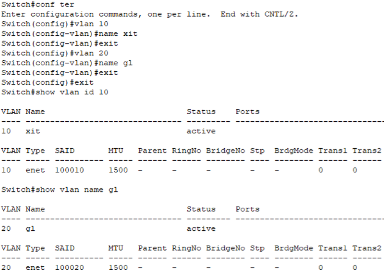
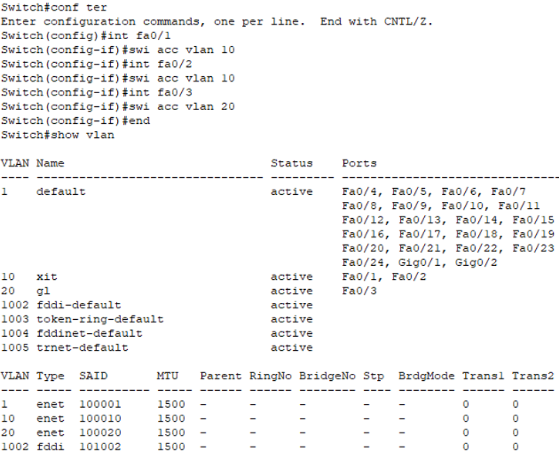
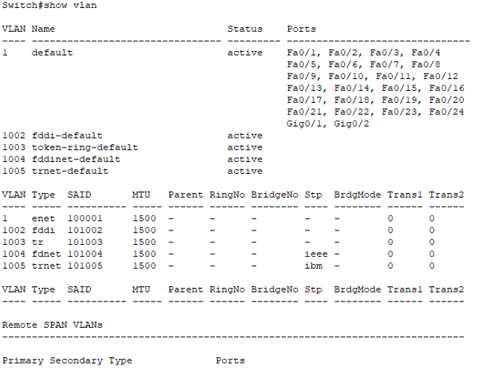
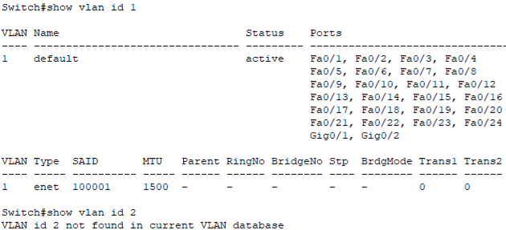
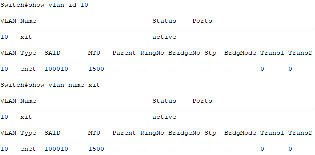
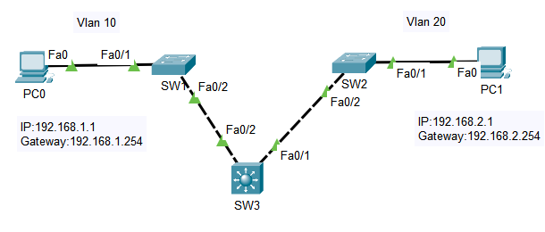
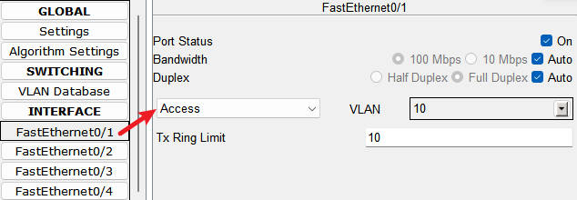
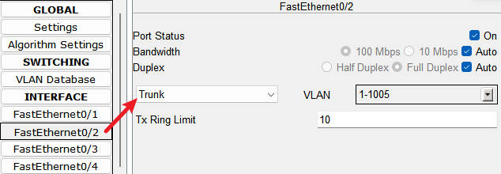
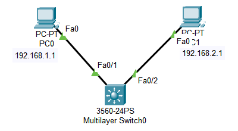

Cisco CLI中，命令关键字不区分大小写
命令可以使用简写，不需要打全，使用 Tab 主动补全
通常输入命令关键字的前3个字母即可；应确保对应的命令唯一
强制退出命令行卡顿：Ctrl + Shift + 6
terminal/ter：终端，指设备本身
interface/inter：接口；设备具有的接口
| Switch> | 用户模式，en 进入特权模式 |
| Switch# | Privileged EXEC Mode
特权模式，conf ter 进入全局配置模式 |
| Switch#conf | 全局配置 |
| Switch(config-if) | 接口配置 |
| Switch(config-vlan) | VLAN 配置 |
| Switch(config-line) | console 配置 |
使用 ↑、↓ 可以选择历史命令；如果没有出现，则表明该命令不适用当前模式
交换机的日常执勤中，很少直接操作交换机
初始化配置：通常使用PC的串口RS232连接交换机，在PC上操作交换机，配置其基本参数，如主机名、登陆权限等
日常运维:使用串口；使用telnet远程登陆
switch(config)#hostname huali
huali(config)#ena pass xxx // 明文密码
huali(config)#ena secret xxx // 密文密码
huali(config)#line console 0 // 选择 Console 口
huali(config-line)#password xxx // 配置密码
huali(config-line)#login // 登陆时检测密码
huali(config)#line vty 0 4
huali(config-line)#password huali
huali(config-line)#login
安全起见，应为不同的模式配置不同的密码
建议根据需要选择合适的密码前缀
24 个端口
支持 PoE（可为下联 AP、摄像头等供电）
标准软件镜像（Standard Image）
24 个端口
支持 PoE（若下联 AP / 摄像头可用）
是 3560 的升级版，性能更强，功能更丰富
标准软件镜像（Standard Image）
PoE：Power over Ethernet，以太网供电
switch>en switch>conf ter switch(config)#vlan 10 switch(config-vlan)#name gl switch(config)#inte fa0/1 switch(config-if)#swi mode access switch(config-if)#swi acc vlan 10 switch(config-if)exit switch#


Switch(config-if)#switchport mode trunk
Switch(config-if)#switchport trunk allowed vlan 20
Switch(config-if)#switchport trunk allowed vlan 20, 30
Switch(config-if)#switchport trunk allowed vlan 20-30
switch#show vlan

Switch#show vlan brief
switch#show vlan id 1


switch#show vlan name xit
Switch#show interfaces trunk
Switch#show interfaces trunk Port Mode Encapsulation Status Native vlan Fa0/4 on 802.1q trunking 1 Port Vlans allowed on trunk Fa0/4 20 Port Vlans allowed and active in management domain Fa0/4 20 Port Vlans in spanning tree forwarding state and not pruned Fa0/4 20

划分VLAN 10
fa0/1划分端口
fa0/2 trunk模式：VLAN 20 可以通过
Switch>en Switch#conf t Enter configuration commands, one per line. End with CNTL/Z. Switch(config)#vlan 10 Switch(config-vlan)#exit Switch(config)#interface fa0/1 Switch(config-if)#switchport access vlan 10 Switch(config-if)#exit Switch(config)#inter fa0/2 Switch(config-if)#switchport mode trunk Switch(config-if)#end Switch# %SYS-5-CONFIG_I: Configured from console by console Switch#write


划分VLAN 20
fa0/1划分端口
fa0/2 trunk模式：VLAN 10 可以通过
操作同SW1
创建 VLAN 10、VLAN 20
Switch(config)#vlan 10 Switch(config-vlan)#exit Switch(config)#vlan 20 Switch(config-vlan)#exit Switch(config)#
端口划分到各自 VLAN；限制为 VLAN10、VLAN20；否则还原为 VLAN 1
Switch(config)#inter fa0/1 Switch(config-if)#switchport access vlan 10 Switch(config-if)#exit Switch(config)#inter fa0/2 Switch(config-if)#switchport access vlan 20 Switch(config-if)#exit
为 VLAN 分配IP地址、开启路由
Switch(config)#inter vlan 10 Switch(config-if)#ip address 192.168.1.254 255.255.255.0 Switch(config-if)#exit Switch(config)#inter vlan 20 Switch(config-if)#ip address 192.168.2.254 255.255.255.0 Switch(config-if)#exit Switch(config)#ip routing Switch(config)#end Switch#write
no switchport
ip routing

PC0：192.168.1.1/24 192.168.1.254
PC1：192.168.2.1/24 192.168.2.254
Switch> Switch>en Switch#conf ter Enter configuration commands, one per line. End with CNTL/Z. Switch(config)#interface fa0/1 Switch(config-if)#no switchport Switch(config-if)#ip address 192.168.1.254 255.255.255.0 Switch(config-if)#exit Switch(config)#ip routing
Switch#show interfaces fa0/2 switchport Name: Fa0/2 Switchport: Disabled
Switch#show interfaces fa0/3 switchport Name: Fa0/3 Switchport: Enabled ...